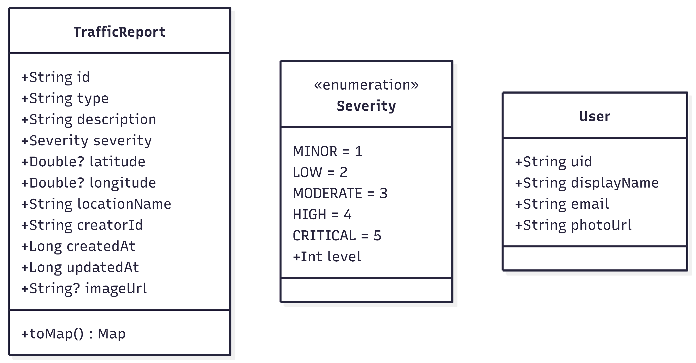
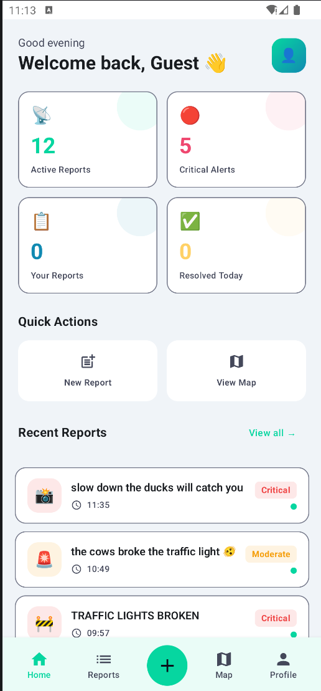
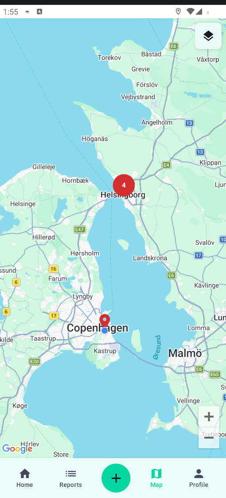
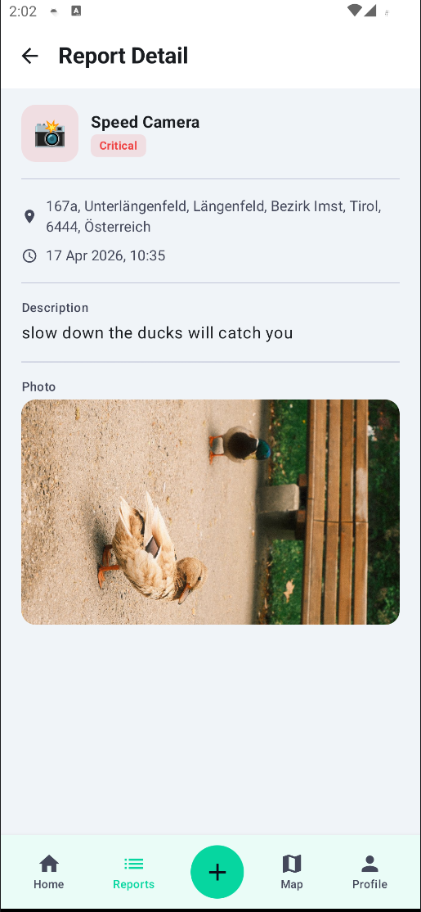
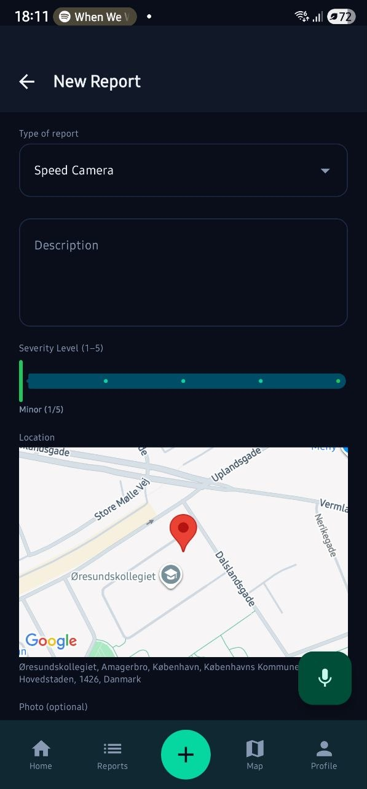
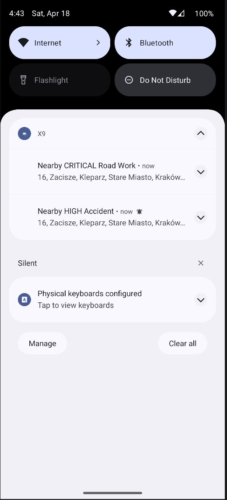
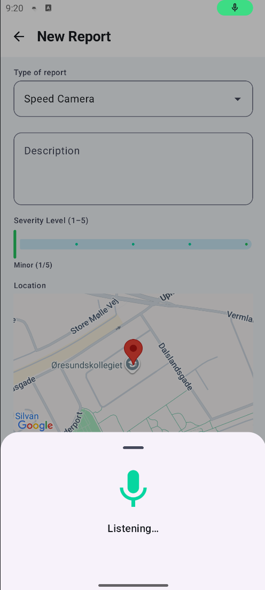
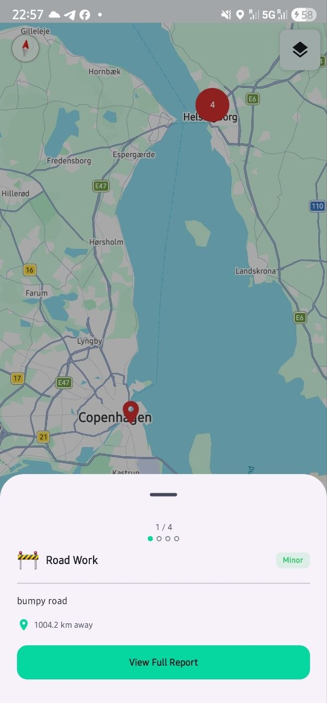
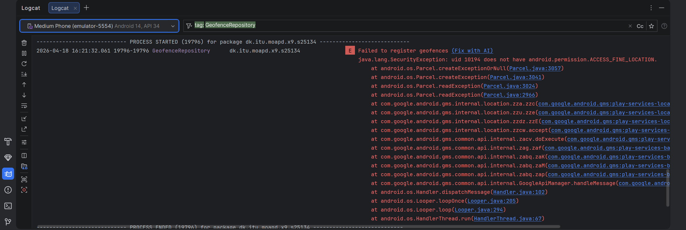

Members: Loo Zhi Yi, Sean Elisha Koh Tze Li
The app follows MVVM (Model-View-ViewModel) with the Repository pattern that is accessed through the different classes through an Application singleton X9Application.
Each layer of the application namely, Model, Repository, ViewModel and UI, follows the single-responsibility principle.
TrafficReport, User and serialization logic with Firebase Realtime databaseThe two main data classes in the application are TrafficReport and User.

Note: Class diagram generated using Mermaid syntax and exported to .PNG files using online mermaid editor
There are 7 main screens designed in X9, namely DashboardScreen, LoginScreen, MapScreen, ProfileScreen, ReportDetailScreen, ReportFormScreen, ReportListScreen. We can discuss the more prominent screens in X9 and briefly the design considerations behind each of these screens.
DashboardScreen
2x2 stat card that provides quick filter options to reports. E.g., there is the filter for Active Reports and Resolved Today reports. There is also filters to filter between your own created reports and critical reports. These quick filter options allow users to quickly fine reports that are of interest to them.Quick Actions cards namely New Report and View Map which allows users to quickly access the report creation workflow and view the maps quickly.Recent Reports section provides a list of summarized reports. Users can read recent reports at a quick glance. A View All button also allows the users to access the list of all reports in detail.Bottom Nav Bar is always at the bottom of X9. It provides clickable navigation buttons for users regardless of where they are at in X9. The buttons are also named in such a way that their functionality is self-explanatory to prevent any confusion among users.
Google Maps API to prevent confusions.

Geoproximity enabled notifications (Assignment 2 extra feature)
HIGH or CRITICAL and will notify users about them with a cooldown of 1 hour tht is stored using SharedPreferences. This prevents the users from being spammed with notifications everytime X9 syncs with Firebase.
Speech-enabled report creation (Assignment 2 extra feature)

Report clustering on Application’s Map screen
maps-compose-utils library which provides a clustering composable. Reports are passed as cluster items. The library handles distance-based grouping automatically. We also configured a threshold of 4 reports to trigger clustering into a red bubble count.
Image showing report clustering on the map screen with scrollable report details
Offline persistence for Firebase realtime database
Firebase.database.setPersistenceEnabled(true) in X9Application.kt.NavRoutes sealed navigation object
NavHost + NavController.MainActivity.kt we defined the routes using raw string literals as shown in the code below:// Snippet from MainActivity.kt describing NavHost + NavController navigation
// rest of file ...
NavHost(
navController = navController,
startDestination = startDestination
) {
composable("login") {
val isLoading by authViewModel.isLoading.collectAsStateWithLifecycle()
LoginScreen(
isLoading = isLoading,
onSignInWithEmail = { e, p -> authViewModel.signInWithEmail(e, p) },
onRegisterWithEmail = { name, e, p -> authViewModel.registerWithEmail(name, e, p) },
onSignInWithGoogle = { context -> authViewModel.signInWithGoogleCredential(context) },
onContinueAsGuest = { navController.popBackStack() },
paddingValues = paddingValues
)
}
// rest of file ...
}NavRoutes object to centralize the defining of routes to a single sealed object that can be accessed in other parts of the application. This prevents mistakes like what we made from happening and makes the codebase more maintainable as changes to the routes only need to be made in one central location.// NavRoutes.kt
object NavRoutes {
const val LOGIN = "login"
const val HOME = "home"
const val REPORTS = "reports"
const val REPORTS_ROUTE = "reports?myReportsOnly={myReportsOnly}&criticalOnly={criticalOnly}"
const val ADD = "add"
const val DETAIL_ROUTE = "detail/{reportId}"
const val EDIT_ROUTE = "edit/{reportId}"
const val MAP = "map"
const val PROFILE = "profile"
fun detail(reportId: String) = "detail/$reportId"
fun edit(reportId: String) = "edit/$reportId"
fun reports(myReportsOnly: Boolean = false, criticalOnly: Boolean = false): String =
if (!myReportsOnly && !criticalOnly) REPORTS
else "$REPORTS?myReportsOnly=$myReportsOnly&criticalOnly=$criticalOnly"
}
NavRoutes.ktfile showing where the routes are being defined
// MainActivity.kt
// rest of file ...
LaunchedEffect(currentUser) {
if (currentUser != null && currentRoute == NavRoutes.LOGIN) {
navController.navigate(NavRoutes.HOME) {
popUpTo(NavRoutes.LOGIN) { inclusive = true }
}
}
}
// rest of file ...
MainActivity.ktwhere it wires all the routing using routes defined inNavRoutes.kt
Before each iteration of the application, we will look through the requirements stated in the weekly exercises and work plans. We will come up with a simple internal document which describes the expected behavior of the application after this iteration. We understand that the best development practice is to write unit-tests using Junit. But in the interest of time and considering the scale of the project we decided that conducting smoke tests after each iteration will suffice.
Both physical Android devices and Android studio’s built-in Android emulator are being used during testing. Usually, physical devices are used for convenience and to get a “real feel” of how X9 will feel on real phones. The emulator is only used for specific features (geo-proximity enabled notifications) to spoof the GPS location to test if the notifications are triggered correctly.
The application is also developed in such a way that there is sufficient logging at key code execution points, which aids our debugging process when faced with problems during the smoke tests. Since there is no solid testing pipelines in place, we try to limit the blast radius of potential issues by adopting trunk-based development. Starting each iteration in their respective branches and only merging back to main when we are satisfied with the behavior. Given more time, we will want to explore incorporating a JUnit testing pipeline to ensure the correctness of the code and eliminate any human errors in the testing process.
Example of internal document used for smoke tests:
X9-Version-6 requirements: 1.) Successful sign-up work flow. - Offloaded to firebase auth, just need to test if new users can create account successfully - Edge cases: duplicate emails, usernames etc. 2.) Successful log-in, log-out workflow - Users should be authenticate and terminate their session gracefully while using the application - Check logcat for correct detection of authentication state. 3.) Authentication and authorization checks - ALL users can read the traffic reports, no matter authenticated or not - For update and delete workflows, authorization workflow is such that only creators of the reports themselves can update and delete the reports.
Problematic place search.
Geocoding API was buggy, and we could not replicate the behavior of Google Maps properly.Geofence always fails to register on first launch
ACCESS_FINE_LOCATION and ACCESS_COARSE_LOCATION was only requested when users first access the Maps page of X9. For first time users, when the app is first launched, neither ACCESS_FINE_LOCATION nor ACCESS_COARSE_LOCATION has been granted yet so ACCESS_BACKGROUND_LOCATION does not work.
MainActivity.kt that allows Geofences to fail silently when the permissions are not granted correctly. When they are granted by the users, the Geofences will then be triggered to be registered again. With this fix, Geofences will be registered properly and new users will be able to get geo-proximity enabled notifications even if it is their first time using the app.Lack of severity sorting for report notifications
HIGH and CRITICAL but they are not sorted in any order. HIGH severity reports can be shown before CRITICAL reports in the notification shade.CRITICAL reports compared to HIGH reports.Firebase type mismatch during deserialization
Double, latitude/ longitude that happens to be a whole number (e.g. 55.0). Firebase returns it as a long, casting it directly to Double throws an exception at runtime.ENUM defined also cannot be deserialized directly to Firebase Realtime DB.TrafficReportSerializer.kt was implemented with functions like DataSnapshot.toTrafficReport() extension function convert all numeric fields via toSring().toDoubleOrNull() to handle both Long and Double values transparently. The Int and string fo the ENUM is also used in the serializer to safely convert between an ENUM and what is stored in the database.Difficulty to fully automate report creation using speech
SpeechRecognizer and ‘make sense’ of the text tokens.// Snippet from the file SpeechParser.kt showing keyword mapping between speech tokens and Severity level
// Helper to match parsed speech tokens to severity levels
private val severityKeywords : List<Pair<String, Severity>> = listOf(
"critical" to Severity.CRITICAL,
"severe" to Severity.CRITICAL,
"danger" to Severity.CRITICAL,
"serious" to Severity.HIGH,
"moderate" to Severity.MODERATE,
"medium" to Severity.MODERATE,
"minor" to Severity.MINOR,
"high" to Severity.HIGH,
"low" to Severity.LOW
)